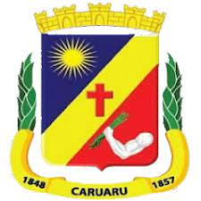
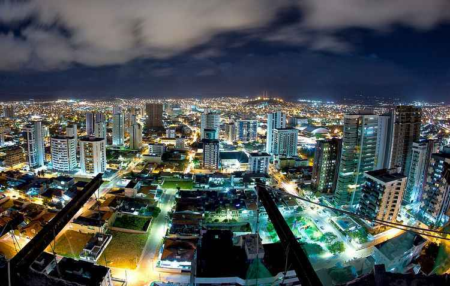
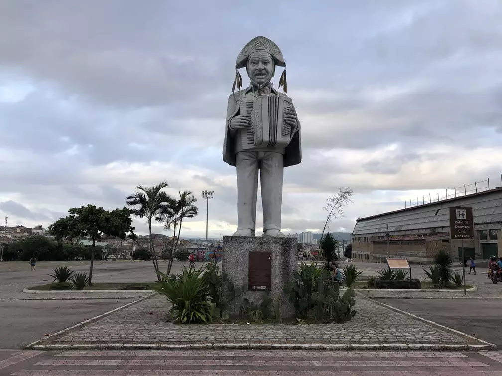

Bem vindo a Caruaru!
Principal
|
História
|
Galeria
|
Contato

Caruaru
Patrimônios e Riquezas Culturais de Caruaru
Cidade de Caruaru
(Céu do Cangaço Caruaru)

Luiz Gonzaga
(Bairro Luiz Gonzaga Caruaru)

Patrimônio Cultural Brasileiro
(Feira de Caruaru)